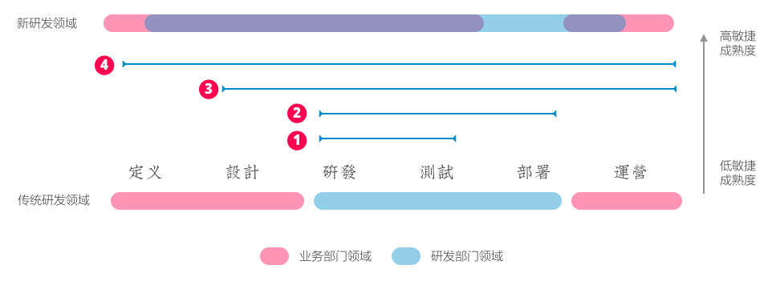

一位来自传统企业、正在经历研发系统敏捷转型的IT组织管理者L先生问我：「当整个研发体系正在朝敏捷方向转型，现有的美工该怎么办？」
本文回答L先生的问题，首先，我们来谈敏捷研发体系转型的基本逻辑：
敏捷体系的基本逻辑
对于传统公司的研发体系而言，定义需求、设计方案、研发系统、测试系统、系统部署、和产品运营往往是独立存在的阶段。越来越多人开始实践敏捷时，选择第一步往往是通过敏捷研发实践和持续构建，将开发体系和测试体系整合（图中①）。
在经历了第一步「研发+测试」敏捷实践之后的第二步，往往是向后将「上线体系」集成在「研发体系」中——即通过持续集成的方式、缩短小到功能大到产品从研发到上线的时间，并将上线过程碎片化（图中②）。
这两步所解决的基本都是「如何用正确的方式做软件（Do things right）」的问题，之后，企业内的研发组织所思考的是如何将工程实践整合「需求实践」，因为越来越多IT组织的负责人发现，软件研发中真正的浪费来自于需求不明确和需求变动，于是「业务敏捷」成为较为成熟的敏捷IT组织着眼的下一步，即「做正确的软件（Do right thing）」。
这个阶段，企业开始构建自己的设计和产品经理团队，通过一前（新需求的设计）一后（产品的运营演进），在成熟的技术平台与研发实践上完成从需求设计到最后运营的全过程（图中③）。
到③的阶段，IT组织已经基本上和成熟互联网公司相当，这里面包含三个要素：
- 优秀的研发实践；
- 成熟的持续构建和持续集成体系；
- 成熟的设计和产品管理实践；
而超越阶段③到达阶段④，即IT组织可以帮助业务部门完成对需求的定义，成为业务部门的合作伙伴，而非「供应商」，敏捷研发体系则到达最成熟的阶段。

从上图可以看出，研发部门的工作领域，随着敏捷成熟度的提升而延伸到传统业务部门领域，这就是我们经常说的「业务敏捷」。
为什么要谈「敏捷研发体系」的成熟度，因为对设计而言，研发组织所处的阶段，决定了它需要什么样的「美工」，即设计实践。
美工的传统领域
回过头来我们看美工，这是对设计师最传统的定义，在传统软件研发中，往往是进入开发环节前的最后一环，或是满足产品运营过程中的零碎需求，美工将产品经理或需求分析师定义的需求，转化成「美的东西」。

在传统软件开发模式中，设计师之所以被简单定义为「美工」，是由开发模式决定，而当开发模式改变之后，设计师的协作模式自然需要改变。
简单来说，当研发部门和业务部门越来越融合，无论设计师来自于哪一方，工作方式、职责、技能都会发生巨大的改变，此点往往不可逆转。
例如，敏捷转型进入③阶段，需求不再通过较长时间的整理期，最后通过文档的形式流入研发阶段，而是通过设计最小可验证集合（MVP）的方式，尽可能快地进入研发阶段，一方面设计师需要将需求转化为设计、又要充分了解研发能力，还要尽可能地参与到研发和测试过程中去，这样的方式决定了设计师或设计团队的新工作方式。
因此，设计师的技能要求、工作方式由研发体系决定，首先了解目前的研发体系是怎样的，处于哪个阶段，才能设计出当前体系最合适的设计实践。
设计实践的规划
对于设计实践的规划往往取决于研发组织的成熟度、以及研发产品本身的特性（运营为主、还是新产品为主、还是探索性创新为主），因此无法有固定模式存在，例如，研发体系主要以现有产品运营为主时，对设计实践中的用户测试、定量数据分析要求更高；若研发体系主要以新产品为主，设计实践则更需要设计协作、快速原型、定性分析的能力。
下面这个表格总结了不同成熟度的研发体系，针对不同特性的产品研发，可以着重考虑的设计实践：
对于上表，有以下几点需要注意：
并不是所有情况都适合设计外包
设计外包本身基于传统研发和业务分离的模式，当你目前研发体系越需要和业务整合在一起，传统设计外包的冲突越大；此外探索性创新本身对自身设计要求较高，探索的成功率极低，因此通过探索过程积累创新经验至关重要，在没有设计能力的情况下，将其外包，成功率低、也毫无益处。
进入研发和业务逐渐融合的阶段2，对设计沟通的能力可能高于设计本身
一旦研发和业务发生融合，设计师所承担的责任比不只是设计本身，还有大量的沟通工作，在这个阶段应该引入好的设计沟通实践，逐渐建立适合自身需求的流程和方法，对于设计交付物，可以选择设计外包的方式。
设计是影响业务部门最好的手段
设计是业务和研发部门间最天然的融合手段，敏捷研发体系向业务部门拓展的第一步就是引入优秀的设计实践，建立和业务部门的互动方式。
选择合适的项目投入设计资源
传统企业的研发部门往往负担多种职责，从产品运营、新产品研发、到探索性创新，对于有限的设计资源，包括设计外包，应该有针对性地根据当前情况投入，例如，有针对性引入设计咨询帮助建立产品运营方面必要的设计实践，而不是在自身未成熟的情况下投入设计资源到探索性创新的项目。
写在最后
无论是否称作敏捷，传统公司的数字化转型往往从研发体系的变革开始，研发体系逐步向业务部门拓展，建立和业务部门更紧密的联系，已经成为趋势。在这个背景下，设计实践在不同的阶段产生不同的作用，研发体系的领导者应该思考以下几个问题：
- 我们的研发体系目前在什么阶段？
- 我们提供什么样的服务？
- 我们和业务部门的关系如何？
- 阶段、服务、和关系需要怎样的设计实践？
- 面对不足的设计能力，设计资源如何分配？
最后预祝转型成功！